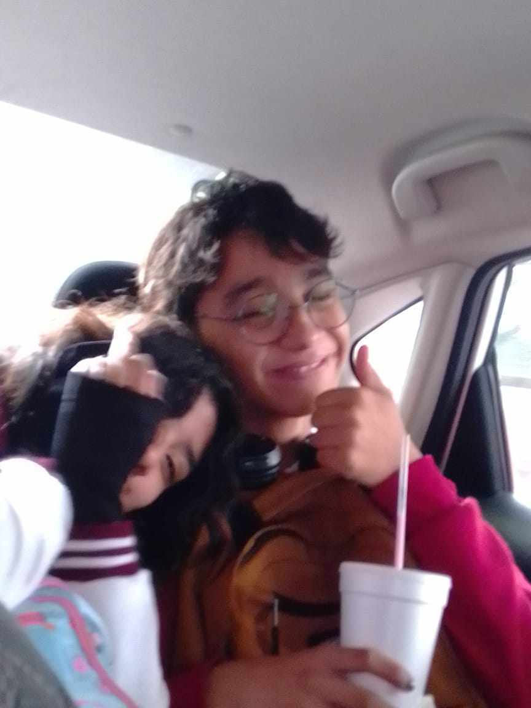
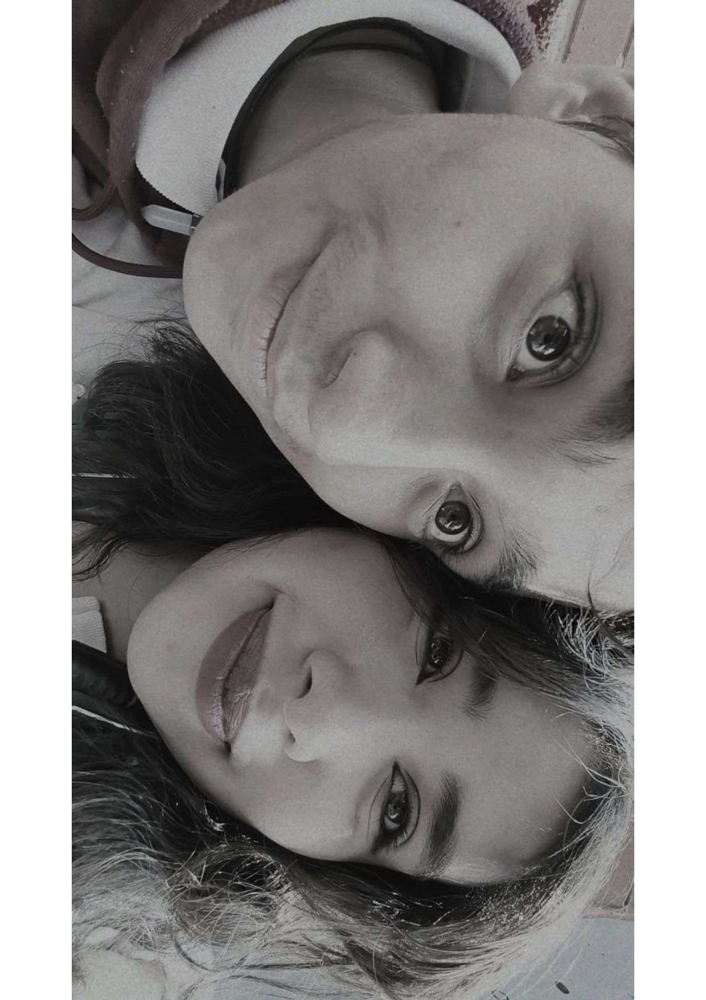
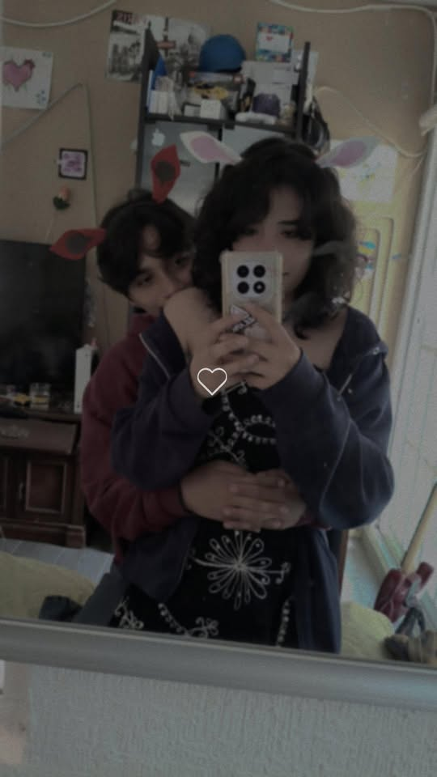
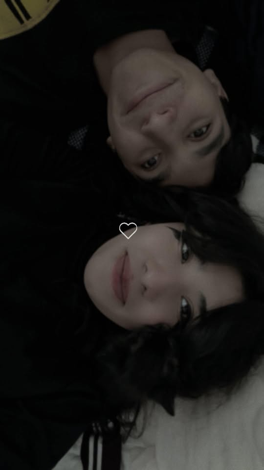

una historia que Paris Santillan sigue construyendo — feliz cumpleaños, mi
Nos conocimos un miércoles 27 de septiembre. Aunque, para ser sincero, yo ya te había visto desde mucho antes. Desde entonces quería pedirte tu número y, como ya sabes... hasta te llegué a acosar un poquito (perdóname jajaja). Me daba muchísimo miedo acercarme porque no sabía si me lo ibas a dar. En ese entonces le tenía mucho miedo al rechazo. Después de unos días, recuerdo que Yareli me pidió mi número para Azul y, supongo, también para ella. Pero la verdad es que tus ojos ya me habían enamorado desde antes. Solo estaba buscando la forma de acercarme a ti. Tarde o temprano sabía que lo iba a hacer, y ese miércoles fue el comienzo de una de las historias más bonitas de mi vida. Estaba tan emocionado por conocerte que empecé a buscarte preguntándoles a tus amigas. La verdad, por más que intentaban hacerme plática, mi atención siempre terminaba en la misma pregunta: "¿Dónde está la chica del cabello rizado?" Hasta que, por fin, llegué a ti. Ese "vámonos juntos" lo cambio todo. Dicho día estaba muy nervioso. Sé que no era una cita, pero desde ese momento supe que quería conocerte más, porque desde el primer día despertaste algo muy especial en mí.

La primera vez a solas fue lo mejor, por que a pesar de no ser nada tomabas de mi mano. Cuando te pedí que me acompañaras a mi salon de programación y sucedio la magia jijiji. Te robe un beso, me arme de tanto valor, por que te juro que no sabía si despues de eso me dejarias de hablar o me tomaras como que "!wtfff somos amigos¡". Despues tuvimos nuestra pimera cita, me encanto tanto el echo de que compartieramos tantos gusto que no me sentía como el "raro" si no acompañado. Gracias por compartir todo conmigo <3

Me encantaba que me mostraras los pedazos de tus peliculas favoritas, cuando me compartias como te sentias en ese momento. Pero los mejores momentos son esos cuando agarramos intimidad, ese sentimiento tan hermoso que siento contigo es raro de explicar pero espero me entiendas es como apenas que me fui a quedar a tu casita y mientras haciamos los pancitos con mantequilla, sentí un calor tan especial, me senti tan seguro, de tan solo volver a esas noches donde pensamos en como seria vivir juntos todo una vida es hermoso.

Supe que me enamore de ti cuando empece a dejar de hacer cosas por estar contigo, cuando a veces me salia temprano para poder verte mas tiempo, cuando aceptaste mi fomra de ser y compartiste tus gustos conmigo, cuando empece a ser yo y no ser alguien mas. Por que cuando todo estaba empezando, el corazón me empezaba a latir tan rapido estando tan cerca de ti que sentía que me iba de este mundo, mi mente en seguida empezo a hacer una vida contigo, una vida donde siempre terminamos en un altar, donde me pongo de rodillas hacía ti para pedirte que seas mi esposa <333333
Amo tu sentido del humor y cómo siempre logras hacerme reír. Tu amabilidad infinita con las personas que te rodean. La pasión que le pones a las cosas que realmente te importan. Tu paciencia, especialmente cuando me pongo difícil. Lo inteligente que eres y lo mucho que aprendo de ti cada día. Tu capacidad para mantener la calma cuando todo parece un caos. Tu honestidad, incluso cuando la verdad es difícil de decir. Lo detallista que eres sin necesidad de que sea una fecha especial. Tu empatía y cómo te preocupas genuinamente por los demás. Tu determinación para lograr todo lo que te propones. Esa chispa de locura sana que hace que la vida contigo nunca sea aburrida. Cómo defiendes tus valores y lo que crees que es correcto. Tu curiosidad por descubrir cosas nuevos. Lo madura que eres para resolver los malentendidos. Tu lado más dulce e infantil que solo me muestras a mí. Tu capacidad para pedir perdón cuando te equivocas. Lo buen amiga que eres con la gente que quieres. Tu optimismo, incluso en los días grises. Que eres una persona auténtica y sin filtros. Me haces sentir la persona más afortunada del mundo. A tu lado siento que estoy en un lugar seguro. Me das la confianza para ser 100% yo mismo. Cómo calmas mi ansiedad con solo darme un abrazo. Me haces sentir escuchado y valorado. Tu apoyo incondicional en cada uno de mis proyectos. Cómo me miras, siento que me lees el alma. Siento que contigo puedo hablar de todo y de nada a la vez. Me inspiras a querer ser una mejor versión de mí mismo. Me haces sentir deseado y amado como nadie más. La paz que inunda mi pecho cuando te quedas dormida a mi lado. Me devuelves la calma después de un día estresante. Sabes exactamente cuándo necesito un abrazo silencioso. Me haces creer en el amor de verdad, sin juegos ni dudas. Tu confianza ciega en mis capacidades. Me haces sentir que juntos podemos con todo. El calorcito que me da en el pecho cuando recibo un mensaje tuyo. Me haces sentir que no estoy solo en este mundo. Tu forma de recordarme lo mucho que valgo cuando yo lo olvido. Que haces que los días ordinarios se sientan extraordinarios. Amo nuestras bromas internas que nadie más entiende. Esas conversaciones nocturnas que se extienden hasta la madrugada. Nuestros domingos de no hacer absolutamente nada y ser felices (cuando vienes a mi casita). La forma en que nos comunicamos con solo una mirada en público. Tu complicidad para seguirme la corriente en mis ocurrencias. El recuerdo de nuestra primera cita y los nervios tan bonitos que sentí. Cómo planeamos nuestro futuro juntos con tanta ilusión. Que ver películas contigo siempre termina en pláticas profundas. Los viajes (grandes o pequeños) que hemos compartido. Compartir la comida contigo (aunque a veces yo te robe de tu plato jijijij). Tu abrazo de bienvenida cuando nos vemos después de días separados. Cómo nos reímos de nuestras propias torpezas. El primer beso que nos dimos y cómo me cambió la vida. La forma en que cocinamos juntos (o el intento de hacerlo). Esos momentos de silencio cómodo donde no hace falta decir nada. Recordar cómo empezó todo y ver lo lejos que hemos llegado. Que cualquier plan aburrido se vuelve increíble si estás tú. Tu olor, que se queda grabado en mi ropa y en mi memoria. La forma en que me buscas con el pie para saber que estoy ahí. Cómo se arruga tu nariz cuando te ríes a caricajadas. Tus mensajes de "buenos días" y "buenas noches" que nunca faltan. La forma en que te muerdes el labio cuando estás muy concentrada. Tu risa escandalosa (es mi sonido favorito en el mundo). Que te acuerdes de cómo me gusta comer ciertas cosas. El tono de voz tierno que usas cuando me consientes. Tu forma de caminar y cómo buscas mi mano automáticamente. Ver la pasión en tus ojos cuando me cuentas algo que te emociona. Cómo te estiras al despertar como un gatito. Tus hoyuelos o las pequeñas marcas de expresión que tienes al sonreír. El frío de tus manos que siempre buscas calentar con las mías. Que guardes papelitos, fotos o recuerdos de lo que hacemos juntos. El brillo de tus ojos cuando me ves llegar. Tu forma de tararear canciones cuando estás distraída. Los besos rápidos que me das de piquito. Que me dejes el último bocado de lo que estás comiendo. Tus ojos, porque reflejan toda la luz del mundo. Tu sonrisa, capaz de desarmarme por completo. El tacto de tu piel contra la mía. Tus manos, que encajan perfectamente con las mías. Tu cabello, me encanta acariciarlo cuando descansamos. La forma de tus labios y lo perfectos que son para besar. Tu estilo único de vestir, todo te queda bien. Tus abrazos protectores, donde me siento invencible. Tu voz, que es la banda sonora que quiero escuchar siempre. Tu fuerza física y mental para afrontar los retos. Tu forma de bailar (aunque sea dando pasitos graciosos). Que cada año que pasa te pones más hermosa. Tu esencia... esa energía que ilumina cualquier habitación en la que entras. Que eres mi hogar en forma de persona. El hecho de que seas mi mejor amiga y mi amante a la vez. Que me dejes conocer tus miedos más profundos. Tu forma de cuidar de mí cuando me siento enfermo o triste. Que compartamos los mismos valores y visión de vida. El saber que, sin importar lo que pase, siempre nos elegiremos. Que eres tú, exactamente como eres, y no te cambiaría absolutamente nada.

Feliz cumpleaños, mi amor. Espero que hoy la pases muy bonito y que sigas cumpliendo muchos años más. Nunca olvides todo lo que te amo y todo lo que siempre te amaré. Tampoco olvides todos los momentos que hemos vivido juntos, porque cada uno de ellos, con el paso del tiempo, se convertirá en un recuerdo hermoso. Gracias por ser parte de mi vida. Te amo. ❤️
Con todo mi cariño, Tu novio Paris Santillan